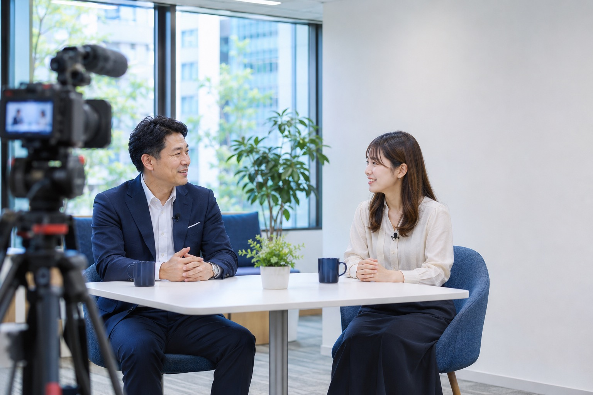
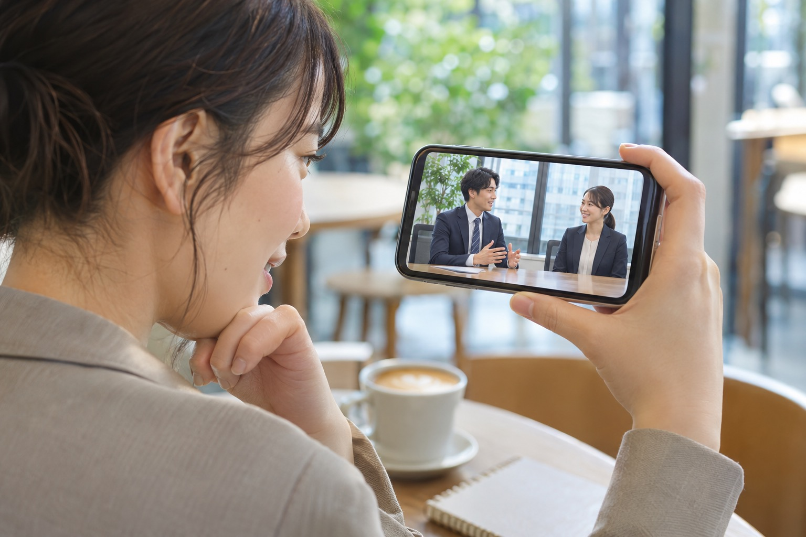
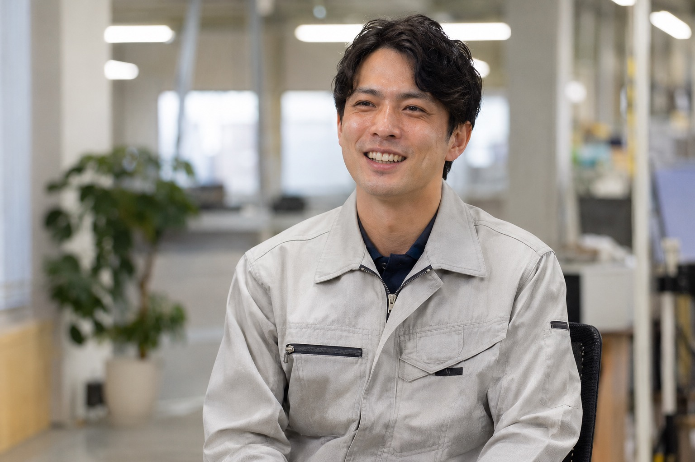
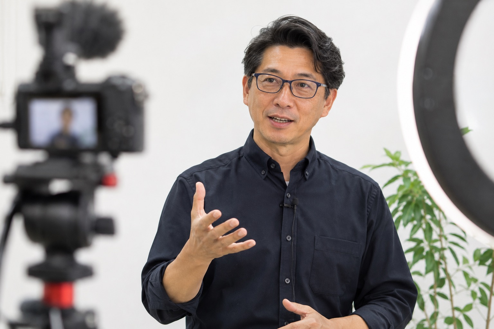

ケース1
外注費を下げたい企業
今の外注：YouTube・採用ページの対談やインタビューの編集
- 本数が増えるたびに増えていた外注費が、月額の定額に変わる
- 1本ごとの見積もりと発注のやり取りがなくなる
- 浮いた予算を、撮影や広告に回せる
- 費用は下がって、出せる本数は増える
自社の「人」と「想い」を、採用と集客の力にしたい企業の方へ

動画編集パス
貴社の良さを、
“社内の人だけが知っている”で終わらせない。
月額10万円〜（税別）の定額で、編集をまるごとお任せ。
品質を保つため、同時進行は2本まで
これまでの累計納品本数 1,500本
作りたい動画はあるのに、
高い費用のせいで作れていない。だから、届けたい相手に届いていない、
という状態です。
動画で伝えるなら、
まずは「ちゃんとした1本」を。
どれも正しい。
でも
見る人が知りたいことに、
その1本は答えられていますか？
職種も、立場も、検討の段階も、見る人によって違う。
見る人ごとの「知りたい」に答える動画を、
出し続けること。

求人も、商品も、情報があふれる時代。
条件や価格は、比べればすぐに並びます。
給与や休日は、求人サイトで比べられる。決め手になるのは「誰と働くか」
機能や価格は、比較サイトで並ぶ。決め手になるのは「この会社に任せられるか」
会社の概要は、検索すれば分かる。決め手になるのは「代表がどんな考えの人か」
条件を並べるだけなら、比較サイトや検索でいくらでも並べられます。
これからは、会社の「人」と「想い」が伝わることの価値が上がっていきます。表情や話しぶりまで伝えられるのは、文字ではなく動画です。
貴社の状況に近いケースをご覧ください。
今の外注：YouTube・採用ページの対談やインタビューの編集

撮る動画：社員インタビュー・代表と社員の対談
撮る動画：お客様との対談・代表の一人語り

撮る動画：一人語り（解説・講義）
目指す姿の例です。応募数や売上などの成果をお約束するものではありません。
社長の対談動画を1本5万円で外注していて、月4本で20万円ほどかかっていました。今は同じ本数を月10万円で頼めています。浮いた分で、撮影の回数を増やせました。
製造業・広報担当（従業員80名）
撮影はしていたのに、編集が追いつかずに眠っていました。毎月4本ずつ仕上がるので、求人ページと説明会の案内に載せています。面接で「動画を見ました」と言われることが増えました。
介護事業・採用担当（従業員120名）
話したいことはあっても、編集する時間がありませんでした。三脚に立てたスマホで撮った素材を送るだけで、5営業日で初稿が届きます。毎週1本、YouTubeに出せています。
税理士事務所・代表
個人の感想です。成果をお約束するものではありません。
10分程度の動画で、編集だけで1本5万〜10万円。本数を増やすほど費用も増えるので、1本作ったところで止まってしまいます。
| 品目 | 金額 |
|---|---|
| 動画編集（10分程度）× 1本 | ¥50,000〜100,000 |
| 修正（決まった回数を超えた分） | 都度、追加料金 |
| テロップ・BGM | 量により変動 |
金額は相場（見積もり比較サイトの取引データ・編集のみ・2026年）
見る人ごとの「知りたい」に答える動画を、出し続ける。
そのための仕組みが
固定カメラで撮影した対談・一人語り動画を、
月額10万円〜の定額で編集するサービスです。
1本ごとの追加費用はかかりません。1本ごとの見積もりや稟議もいりません。
職種ごと、お客様ごと、よくある質問ごと。見る人に合わせた動画を、毎月仕上げます。
素材を送るだけで、カット・テロップ・BGMまで弊社で。撮り方と編集の型が決まっているので、素材を受け取ってから5営業日で、初稿をお届けします。60分の素材でも、初稿までの日数は変わりません。
ベーシックプランの料金です。3ヶ月ごとの更新で、3ヶ月分（30万円）を前払い。
同時進行は2本まで60分までは追加料金で対応。納期は同じ
本数に合わせて、お試し（1本から）・ベーシック・スタンダード・プレミアムの4つのプランがあります。各プランの料金は、サービス資料に載せています。
Instagram向けのショート動画は、別のご依頼で承ります。
料金はすべて税別です。
| 1本ずつ外注 | 社内で編集 | 動画編集パス | |
|---|---|---|---|
| 費用 | △1本5万〜10万円 | △担当者の人件費と編集ソフト | ◎月10万円で固定 |
| 本数 | ×増やすほど費用も増える | △担当者の手が空く分だけ | ◎定額で月3〜4本が目安 |
| 修正 | △決まった回数を超えると追加料金 | ○社内で対応 | ○1本3回まで月額内 |
| 納期 | △見積もりとやり取り次第 | △兼務の空き次第 | ◎素材受領から5営業日で初稿 |
| 社内の手間 | △毎回の見積もり・発注 | ×編集作業そのもの | ◎素材を送るだけ |
外注の金額は、10分程度の動画の編集のみの相場（見積もり比較サイトの取引データ・2026年）。
今のお悩みを伺い、動画編集パスが合うかどうかを一緒に確かめます。
3ヶ月分を前払いで。
撮影したデータを、ギガファイル便かGoogle Driveでそのままお送りください。
カット・テロップ・BGMを入れて、初稿をお届けします。
1本3回まで修正できます。修正が終われば納品です。
情報セキュリティお預かりする素材は、IPA「SECURITY ACTION」二つ星の自己宣言に沿って管理しています。
貴社のお悩みを伺ったうえで、動画編集パスが合うか・合わないかを一緒に確かめます。合わない場合は、そうお伝えします。
「外注費が高い」「作りたい動画があるのに作れていない」「作った動画が、見てほしい相手に届いていない」など、今の状況をそのままお聞かせください。
撮り方、作りたい本数、動画の使い道を伺い、月額で頼むほうがよいか、1本ずつ外注するほうがよいかを、金額で比べてお見せします。
何の動画を、月に何本、どこで使うか。最初の3ヶ月の進め方の案をお渡しします。
お申し込みは、相談のあとに持ち帰って決めていただいて大丈夫です。
「これも動画にしよう」と、費用を気にせず決められる
動画が続かなかったのは、熱意ではなく料金の仕組みのせいだったと分かる
伝えたいことが、見る人ごとの動画として形になっていく
採用、営業、お客様への発信に、動画をどう使うかが見えてくる
まずは資料で、
料金と流れを確かめる。資料のあと、そのまま60分の無料相談も予約できます。
安く速くするために手を抜くのではなく、
編集の型が決まっているから。
編集の型
編集者
固定カメラで撮る形が決まっているので、毎回同じ型で編集できます。
どこを切り、どこに文字を入れ、いつ画角を切り替えると見やすいかを、型にしています。
型があるので迷う時間がかかりません。だから5営業日で初稿を出せ、そのぶんの時間を仕上げと確認に使えます。
外注で2本（相場）10万〜20万円
動画編集パス月10万円〜の定額
10分程度の動画の編集外注は、1本5万〜10万円が相場。2本で月額10万円に到達し、3本目からは依頼が増えるほど1本あたりの費用が下がります。
基本プランは月3〜4本が目安です。
前提：当社試算。10分程度の動画の場合。相場は見積もり比較サイトの取引データ（編集のみ・2026年）。撮影・企画の費用は含みません。
これまでの累計納品本数：1,500本（2026年11月時点）
サービスの中身、料金、対象の動画、ご利用の流れ、よくある質問を、16ページにまとめています。資料をお送りしたあと、そのまま60分の無料相談も予約できます。
基本プランは、月3〜4本が目安です。品質を保つため、同時に進める編集は2本までで、1本納品したら次の1本に取りかかります。もっと本数が必要な場合は、スタンダード（月6〜8本）とプレミアム（月10〜12本）のプランがあります。料金はサービス資料に載せています。
1本から試せるお試しプランがあります（1社につき1回まで）。料金はサービス資料に載せています。
60分までは、追加料金で承ります。素材の長さに関わらず、初稿までは同じ5営業日です。
オプションで、1日5万円（税別・交通費別）でお受けします。固定カメラで撮れば、貴社で撮影していただいても十分です。
固定カメラで撮影した対談動画と一人語り動画です。カメラを動かしながら撮った映像とサムネイルは対象外です。
長尺（YouTube向け）の編集とは別のご依頼で承ります。Instagramのリールなどで使う、1本2分以内の縦型動画を作ります。ショートだけのご依頼もできます。料金は1本7,000円（税別）で、10本・20本・30本をまとめて頼むと1本あたりが下がるパックもあります。詳しくはサービス資料に載せています。
ギガファイル便か、Google Driveでお送りください。撮影したデータを、そのままお送りいただければ大丈夫です。
オプションで、1本2万円（税別）でお受けします。
3ヶ月ごとの更新で、3ヶ月分（基本プランは30万円・税別）を前払いでお願いしています。更新しない場合は、その3ヶ月の終わりで契約が終わります。
途中で解約された場合も、お支払いいただいた料金は払い戻しできません。返金するのは、当社の都合でサービスを提供できなくなった場合だけです。その場合は、残りの期間の分をお返しします。
今のお悩みを伺い、動画編集パスが貴社に合うか・合わないかを一緒に確かめます。撮り方・本数・使い道から、月額で頼むほうがよいか、1本ずつ外注するほうがよいかを金額で比べてお見せします。合わない場合は、そうお伝えします。合う場合は、最初の3ヶ月の進め方の案をお渡しします。
撮影した素材を送れば、編集はすべて弊社で。
月額10万円〜の定額で、動画を出し続けられます。
採用のために。お客様のために。これからの会社のために。
まずはサービス資料で、中身と料金をご確認ください。
そのまま60分の無料相談も予約できます。
＼ 会社名・お名前・メールアドレスだけ ／
サービス資料を無料でもらう